结构动力学模型
（式(5)）
EIeff ∂⁴w/∂x⁴ + ρAeff ∂²w/∂t² = F(t)
构建摩擦纳米超材料传感器监测性能
与电能采集转化理论体系
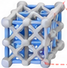
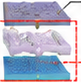
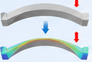
摩擦电材料 基底材料 原始状态 变形状态EIeff ∂⁴w/∂x⁴ + ρAeff ∂²w/∂t² = F(t)
V̇ = R dQ/dt
Q = f(x(t), S, σ, ε)
Vtotal = ∑ Vi
Qtotal = ∑ Qi
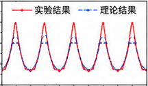
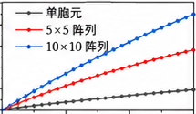
电压 (V) 存储电荷 (μC) 时间 (s) 时间 (s)揭示微电胞元结构参数与宏观力电响应之间的耦合机制
建立结构调控—信号输出—能量转换的定量关系
实现传感性能与采能能力的理论优化
形成摩擦纳米超材料多尺度搅拌摩擦
固相制造工艺方法
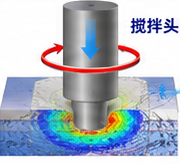
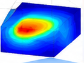
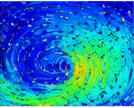
搅拌头 温度场 (°C) 材料流动场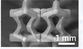
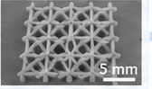
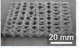
微型定点搅拌摩擦化
形成标准化微电胞元
分段式搅拌摩擦搭接
实现胞元阵列拼接
整体闭环搅拌摩擦成型
完成大尺寸器件加工
突破传统器件组装制造模式，建立结构尺度调控与固相成型协同制造技术
实现微电胞元结构精准控制与传感器高性能一体化制造
研发海洋工程监测感知自能量摩擦纳
米超材料传感系统
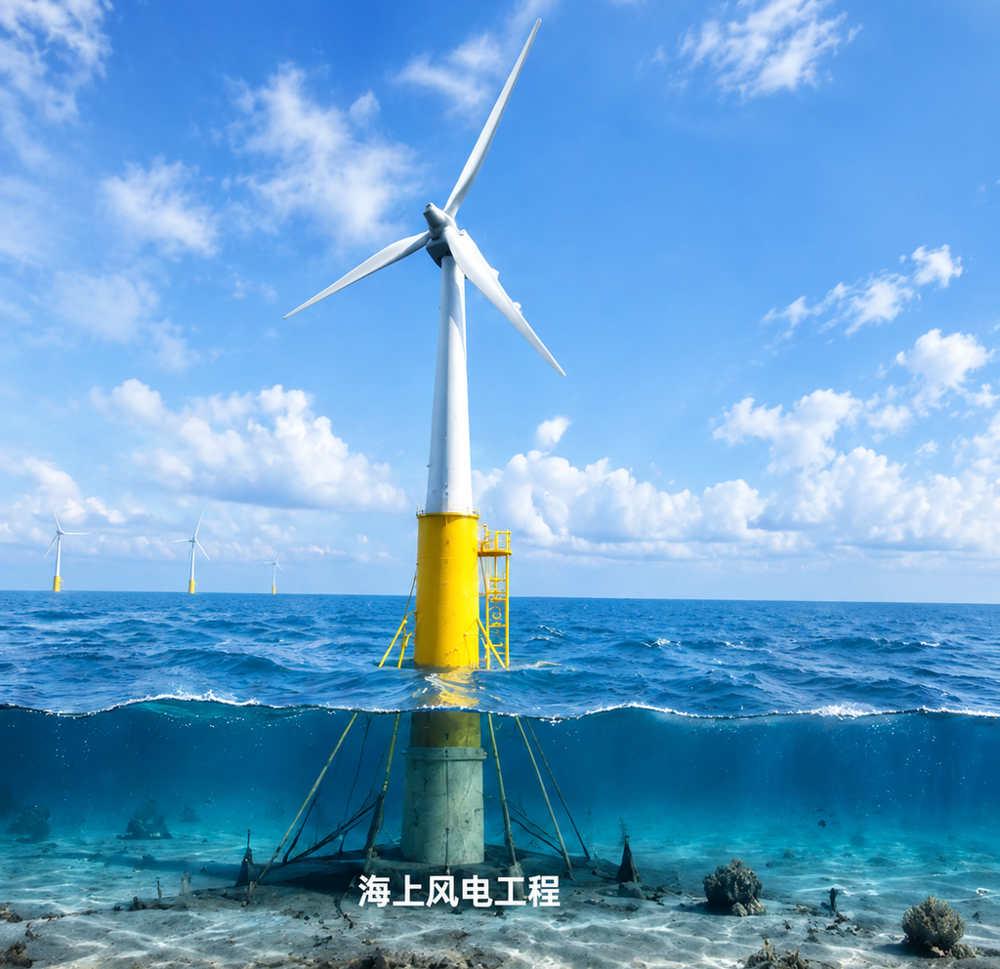
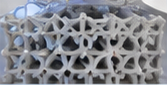
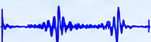
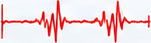
攻克传统传感器在深远海风电场的性能和应用局限
实现海洋工程多部位、不同工况的结构动力响应自能量监测
为海洋工程防灾减灾提供关键技术支撑